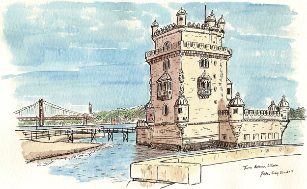

Introduction
Some interesting facts and history about Portuguese Custard Tart.
Pastel de Belém, also known as Pastel de Nata or Portuguese custard tart, is a traditional Portuguese pastry with a rich history. Its origins can be traced back to the early 19th century in the city of Lisbon, Portugal.
The story begins in 1837 when the Jerónimos Monastery in Belém, a district of Lisbon, was closed and the monks who lived there were forced to find a new way to sustain themselves. They decided to open a small pastry shop next to the monastery to sell pastries as a means of income.
The monks used a secret recipe for making a unique custard tart that was unlike any other in the region. This recipe was handed down from generation to generation and kept a well-guarded secret within the monastery.
The Pastel de Belém quickly gained popularity among the locals and became a beloved treat in Lisbon. The shop near the monastery started selling these delicious pastries, and the recipe remained a closely guarded secret. To this day, the exact recipe for the original Pastel de Belém is known only by a few individuals who work at the renowned Antiga Confeitaria de Belém, the pastry shop that continues to produce and sell the authentic Pastéis de Belém.
The Pastel de Belém is characterized by its crispy and flaky puff pastry crust, filled with a creamy, smooth custard made from eggs, sugar, milk, and a hint of vanilla. The tarts are typically served warm, dusted with powdered sugar and a sprinkle of cinnamon.
Today, Pastel de Belém has become an iconic Portuguese pastry and a symbol of Portuguese culinary tradition. It has gained international recognition and is enjoyed by people all over the world who appreciate its unique taste and texture.
If you ever have the chance to visit Lisbon, make sure to stop by the Antiga Confeitaria de Belém to taste the authentic Pastel de Belém and experience a piece of Portuguese culinary history.
Nutrition Information
Calories: 250 Fat: 15g Carbohydrates: 25g Protein: 5g
Recipe
Ingredients:
2 sheets of puff pastry 500 ml (2 cups) of milk 150 grams (3/4 cup) of granulated sugar 4 egg yolks 25 grams (2 tablespoons) of all-purpose flour 1 teaspoon of vanilla extract Ground cinnamon for dusting
Instructions:
Preheat your oven to 220°C (425°F). Grease a muffin tin or tart molds with butter or cooking spray. Roll out the puff pastry sheets on a floured surface until they are thin. Cut the pastry into squares or circles that will fit into the muffin tin or tart molds. Press the pastry squares or circles into the molds, making sure to cover the bottom and sides evenly. Set aside. In a saucepan, heat the milk over medium heat until it starts to steam. Do not let it boil. In a separate bowl, whisk together the sugar, egg yolks, and flour until well combined. Slowly pour the hot milk into the egg mixture, whisking constantly to prevent the eggs from curdling. Return the mixture to the saucepan and cook over medium heat, stirring constantly, until it thickens and reaches a custard-like consistency. This should take about 5-7 minutes. Remove the saucepan from the heat and stir in the vanilla extract. Pour the custard mixture into the prepared pastry shells, filling them about 3/4 full. Place the muffin tin or tart molds in the preheated oven and bake for approximately 15-20 minutes or until the pastry is golden brown and the custard is set. Remove the Pastel de Nata from the oven and let them cool in the molds for a few minutes. Then transfer them to a wire rack to cool completely. Once cooled, dust the tarts with ground cinnamon before serving. Enjoy your homemade Pastel de Nata! Note: This is a simplified version of the recipe. Traditional recipes might have additional steps or variations.